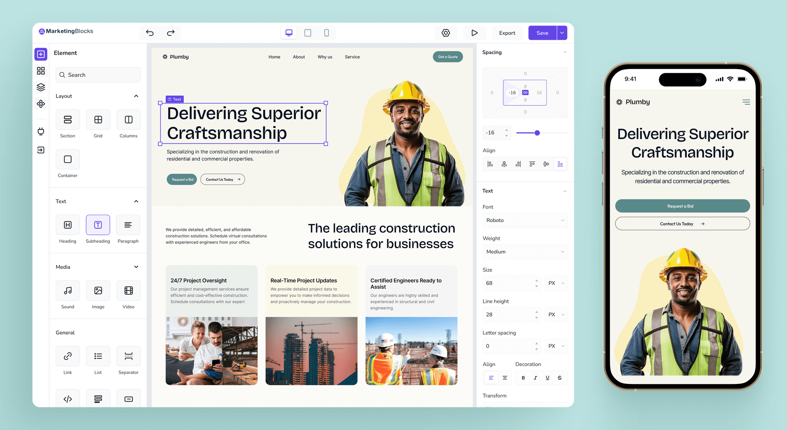
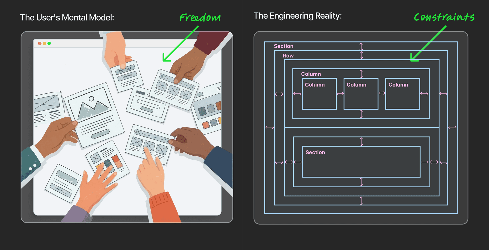
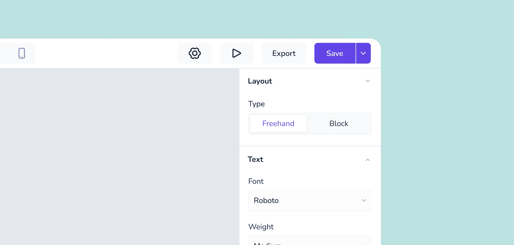
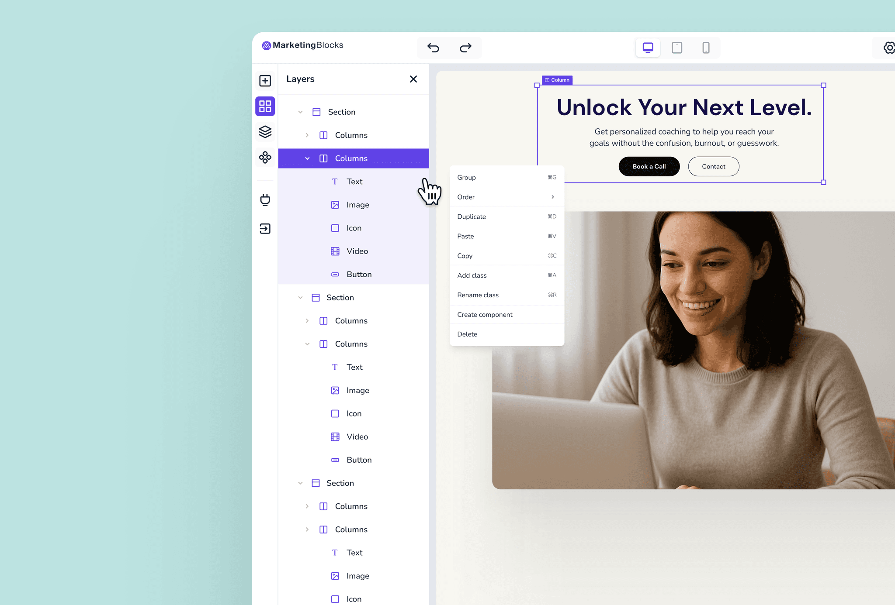
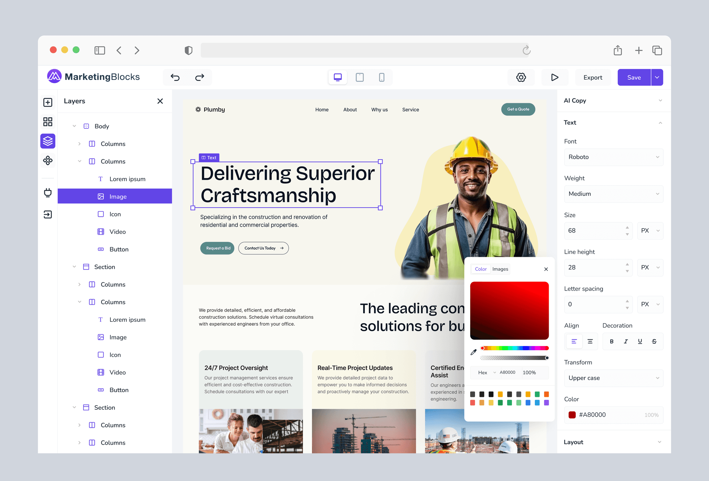
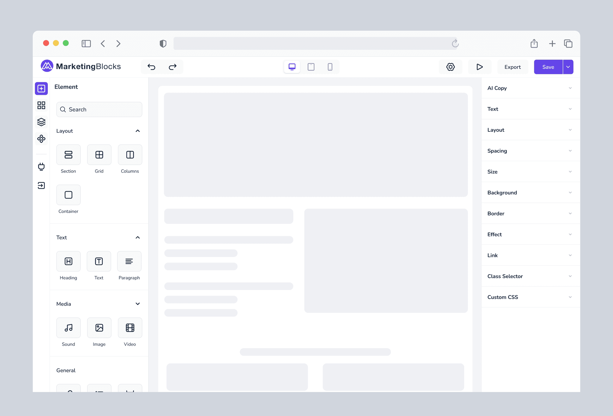
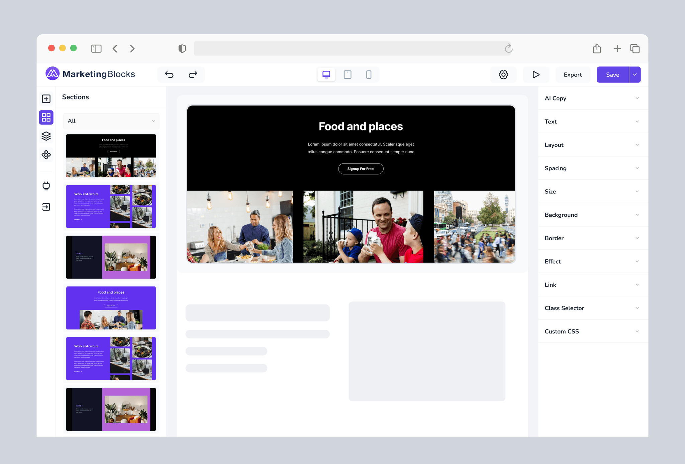
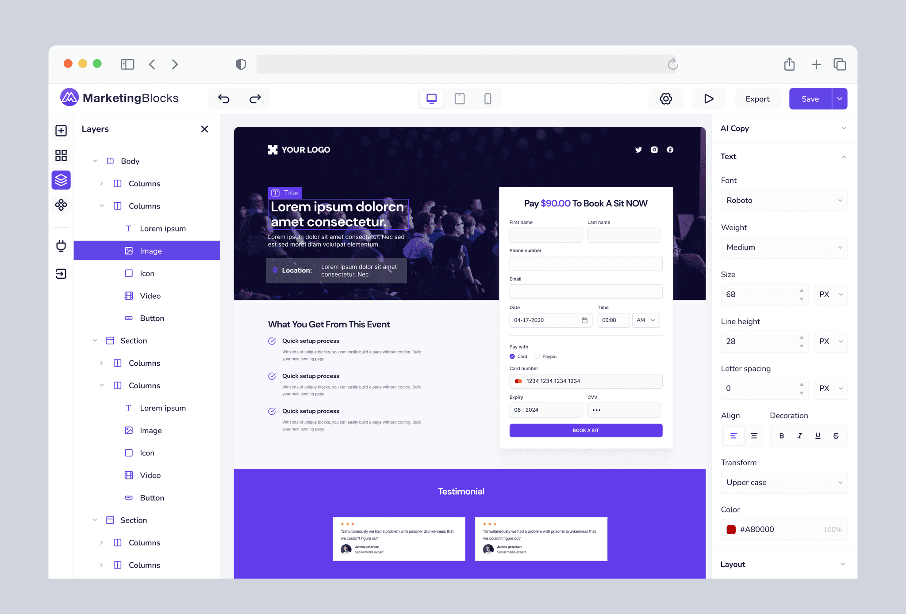
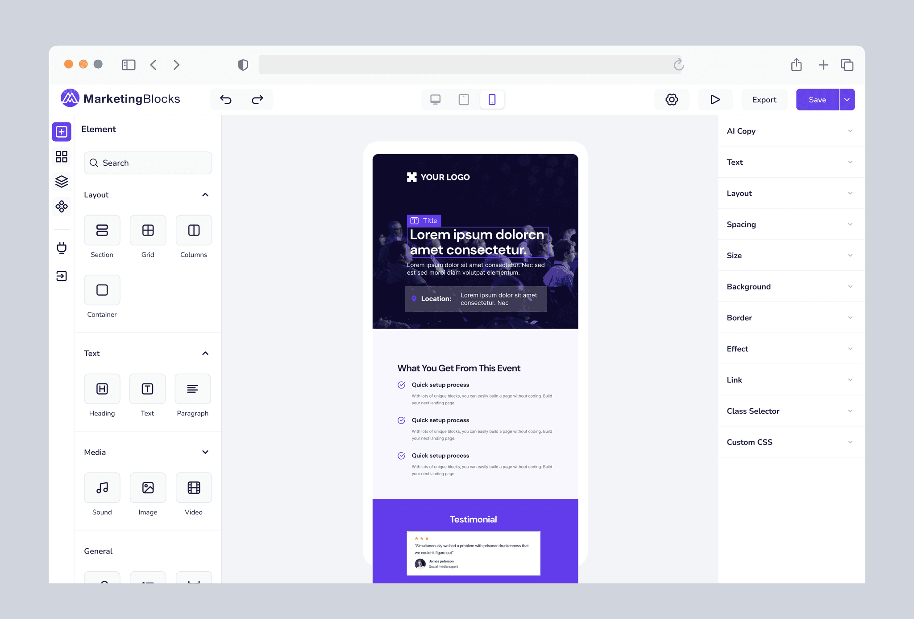
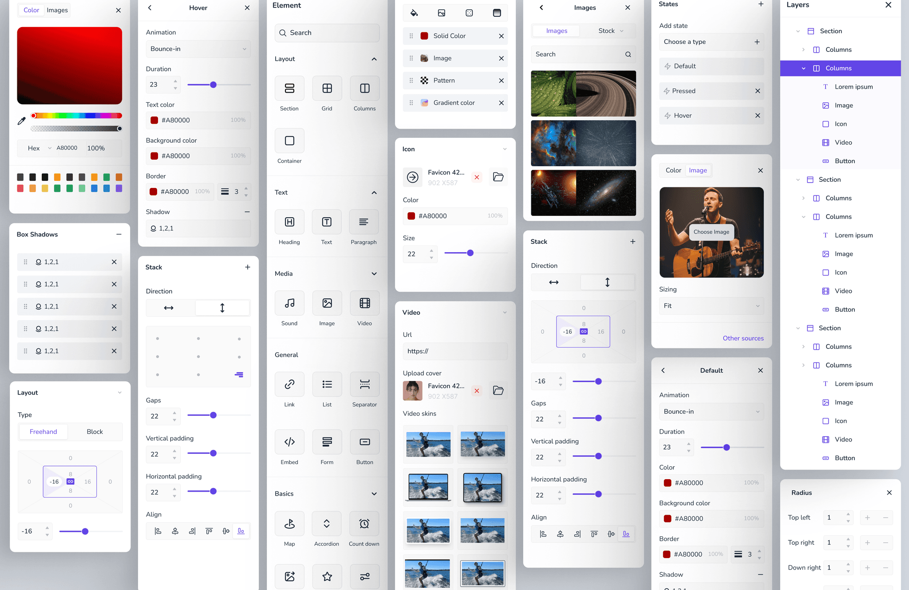

MarketingBlocks users are marketing professionals who need to move fast. They launch lead magnets and sales funnels daily. However, existing tools forced them into a trade-off: choose "Creative Freedom" (which broke on mobile) or "Rigid Templates" (which looked generic).
My challenge was to design an interface that supported both mental models simultaneously: the creative flexibility of a design tool and the structural integrity of a responsive website.

The core friction of this project was a conflict of logic:
The Challenge: The "Box Model" Paradox
The core friction of this project was a conflict of logic:
The User's Mental Model: Marketers want "Freehand" control (like PowerPoint). They want to drag an element anywhere—overlapping images, off-grid buttons, and creative chaos.
The Engineering Reality: The web is built on the "Grid" (The DOM). To work on mobile, elements must be stacked in logical rows and columns.
The Goal:
How might we build a "Hybrid Canvas" that allows freeform creativity without breaking the responsive code required for mobile devices?

The Process & The Pivot
The Hypothesis: Total Freedom
Most competitors force users to choose: Absolute Positioning (Wix) or Strict Grid (Squarespace). We hypothesized that a superior tool would allow users to switch context effortlessly between the two.
The Technical Hurdle
Early in development, "Freehand" elements were causing massive issues. When a user dragged an image 50px to the right, it looked great on Desktop but floated off the screen on Mobile. My engineering partners initially pushed to remove Freehand entirely to ensure code stability.
The Breakthrough
Instead of removing the feature, we collaborated on a "Smart Container" logic.
Desktop: Users can activate "Freehand Mode" to drag elements anywhere for visual impact.
Mobile: The system intelligently interprets the "visual location" of those elements and auto-stacks them into the nearest logical grid column for mobile devices.

The Strategic Decision
I worked with the engineering team to weigh the pros and cons. We made the hard decision to deprecate the Freeform mode.
We realized that for our users, reliability > absolute freedom. If a marketer builds a sales page, it must look good on a phone, or they lose money. We doubled down on a robust Drag-and-Drop Grid System
The Anatomy of the Editor
To support this new Grid System, I designed a workspace that prioritized clarity. By organizing the tools into logical zones, we reduced cognitive load for non-technical users.
The Solution
Interaction Design: Managing Complexity
To make this Hybrid engine usable, I introduced Contextual Guardrails:
Visual Cues: When in Grid Mode, the interface shows blue column lines and "Drop Zones." When in Freeform Mode, the grid lines fade, and elements gain "Position Handles" for precise pixel movement.
The "Safety Net": If a user creates a messy Freeform layout, we added an "Auto-Optimize for Mobile" button that instantly snaps chaotic elements into the nearest logical grid structure for smaller screens.
The Hierarchy Solution: The "X-Ray" View
Even with Freeform, understanding the page structure was critical.
The Problem: Users would overlap three images in Freeform mode and lose track of which one was "on top."
The Solution: A persistent Layers Panel (Tree View). This gave users a "God Mode" view of their page, allowing them to reorder stacked elements or select hidden items without needing to move them on the canvas.

The Outcome
The Page Builder is now live at MarketingBlocks and actively used by business owners and marketers.
Best of Both Worlds: Users report high satisfaction with the ability to "break the grid" for creative headers while trusting the system to handle the mobile view.
Engineering Success: The "Smart Container" logic successfully translates absolute positioning into clean HTML/CSS, ensuring high performance.
Key Lesson Learned
Advocate for the User, Collaborate on the Code.
When engineering constraints threatened to kill the "Freeform" feature, it would have been easy to agree. By pushing for the user's need for creativity and working closely with developers to find a logic that worked, we built a differentiator that separates MarketingBlocks from rigid competitors.





